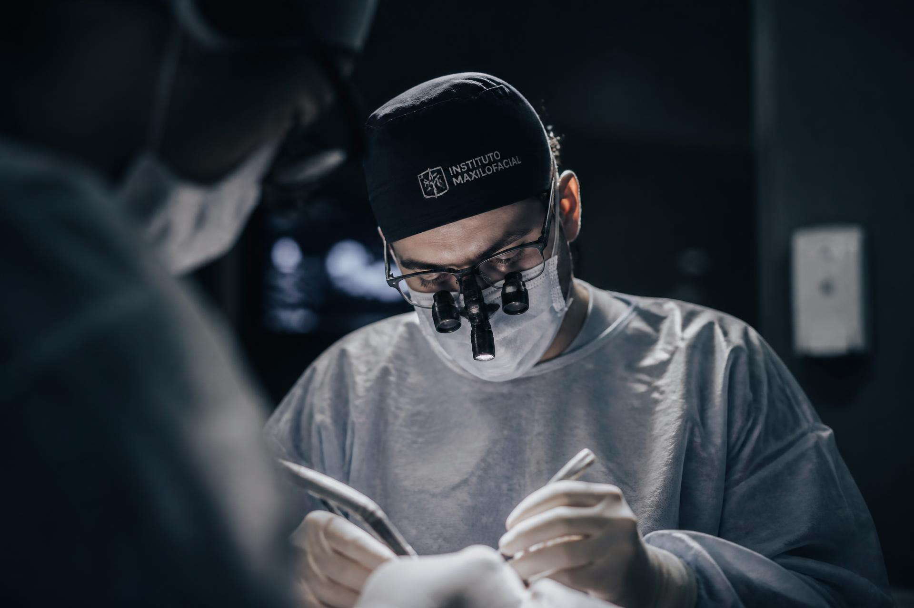
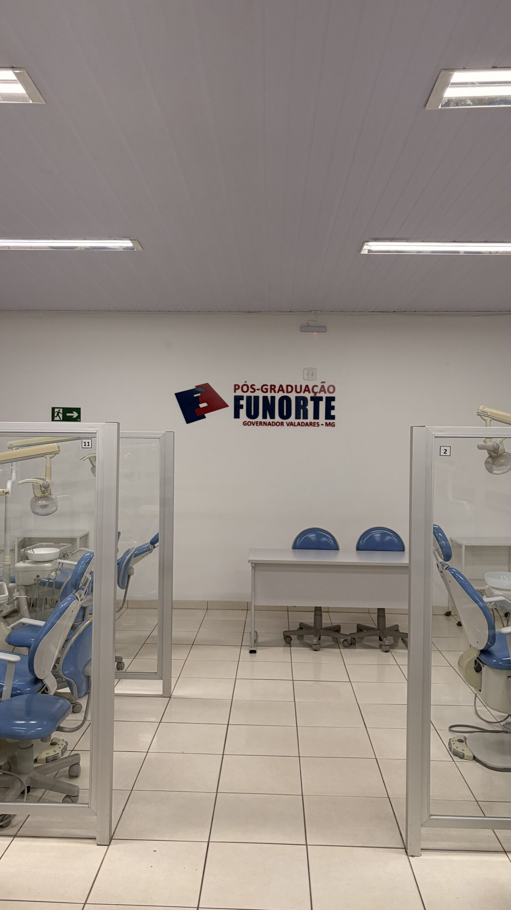
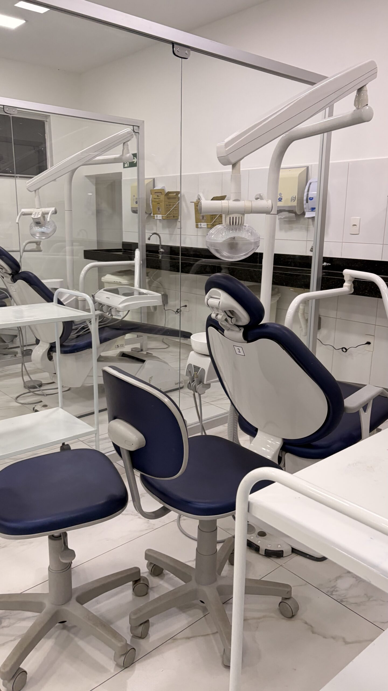
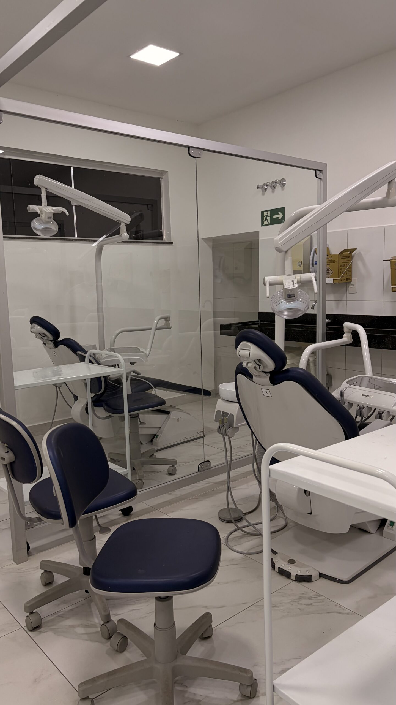
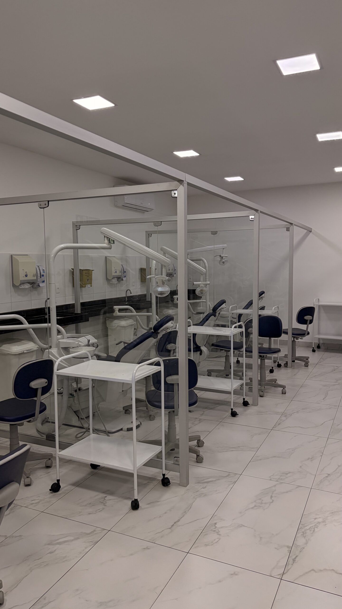
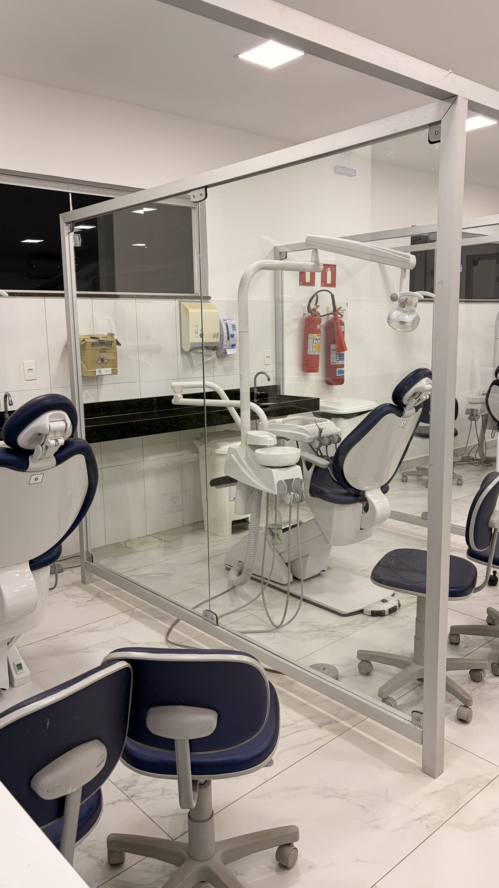

Dr. Lucas Zanon
CRO-MG 39.295
Cirurgião bucomaxilofacial com sólida formação acadêmica e vasta experiência clínica em procedimentos complexos de cirurgia oral. Especialista em Cirurgia Oral Avançada e em Cirurgia e Traumatologia Bucomaxilofacial.


Capacitação desenvolvida para dentistas que desejam elevar seu nível clínico com uma formação prática, científica e de alto padrão.





O Instituto Maxilofacial nasceu do compromisso de elevar o padrão da cirurgia oral no país, unindo rigor científico, tecnologia e prática clínica supervisionada.
Nossa metodologia é construída sobre atualização científica permanente e sobre a vivência real do centro cirúrgico. Cada módulo é desenhado para que o profissional desenvolva domínio técnico, segurança na tomada de decisão e previsibilidade de resultados.
Com corpo docente especializado e turmas reduzidas, o acompanhamento é individual — do planejamento cirúrgico ao manejo de complicações — para que cada dentista conclua a formação preparado para procedimentos de alta complexidade.
180h
Carga horária
100%
Formação prática
Turmas
Reduzidas
Uma equipe multidisciplinar de cirurgiões, especialistas e monitores escolhida pelo rigor técnico e pela vocação para ensinar.
CRO-MG 39.295
Cirurgião bucomaxilofacial com sólida formação acadêmica e vasta experiência clínica em procedimentos complexos de cirurgia oral. Especialista em Cirurgia Oral Avançada e em Cirurgia e Traumatologia Bucomaxilofacial.
Um programa intensivo, presencial e profundamente prático, estruturado para profissionais que buscam domínio técnico real.
Sexta-feira · 14h às 18h
Sábado · 08h às 12h
Sábado · 14h às 18h
180 horas
Presencial
Dentistas formados
Obrigatória
Vagas limitadas

Curso reconhecido
O curso de Cirurgia Oral Avançada do Instituto Maxilofacial é reconhecido pelo Ministério da Educação (MEC), garantindo respaldo institucional e validade nacional à sua formação.
Cada detalhe do programa existe para transformar conhecimento técnico em segurança clínica.
Hands-on supervisionado em todas as etapas, com repetição técnica e correção individual.
Cirurgiões com trajetória clínica consolidada e experiência docente comprovada.
Discussão de casos reais, do planejamento à resolução de intercorrências.
Conteúdo alinhado à melhor evidência disponível e às diretrizes internacionais.
Acompanhamento próximo, com tempo real de bancada para cada participante.
Estrutura, instrumental e protocolos no padrão dos grandes institutos internacionais.
Dez eixos encadeados que conduzem o profissional do planejamento à execução segura.
Diagnóstico por imagem, indicação e protocolo individualizado.
Terceiros molares inclusos, raízes residuais e dentes anquilosados.
Desenhos, incisões, descolamento e reposicionamento tecidual.
Técnicas, fios, tensão e cicatrização por primeira intenção.
Prevenção, reconhecimento precoce e manejo de intercorrências.
Anestésicos, antibióticos, analgesia e controle do pós-operatório.
Treinamento prático supervisionado em bancada.
Discussão guiada do planejamento à alta do paciente.
Cadeia asséptica, esterilização e protocolos de sala.
Seleção, manuseio, ergonomia e conservação.
Dentistas recém-formados
Clínicos gerais
Cirurgiões-dentistas
Profissionais que desejam aperfeiçoamento
Um pouco das aulas, dos procedimentos e da estrutura do instituto.
“A formação mudou completamente a minha segurança em exodontias complexas. O acompanhamento próximo dos professores faz toda a diferença.”
“O nível técnico das aulas práticas é comparável ao que vi em instituições internacionais. Saí preparado para atender casos que antes encaminhava.”
“Turmas reduzidas, protocolo claro e discussão de casos reais. É uma formação que respeita o tempo e o investimento do profissional.”
Faça parte de uma formação desenvolvida para profissionais que buscam excelência em Cirurgia Oral Avançada.
Quero Fazer Minha InscriçãoPreencha os dados abaixo. Nossa equipe acadêmica retornará com as informações completas sobre turma, investimento e documentação.